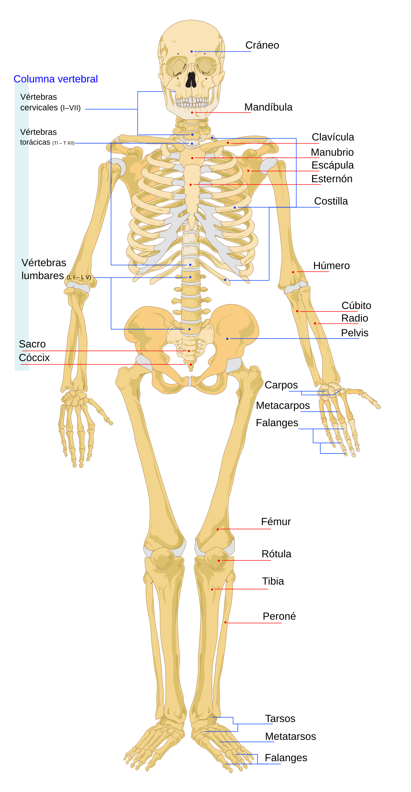
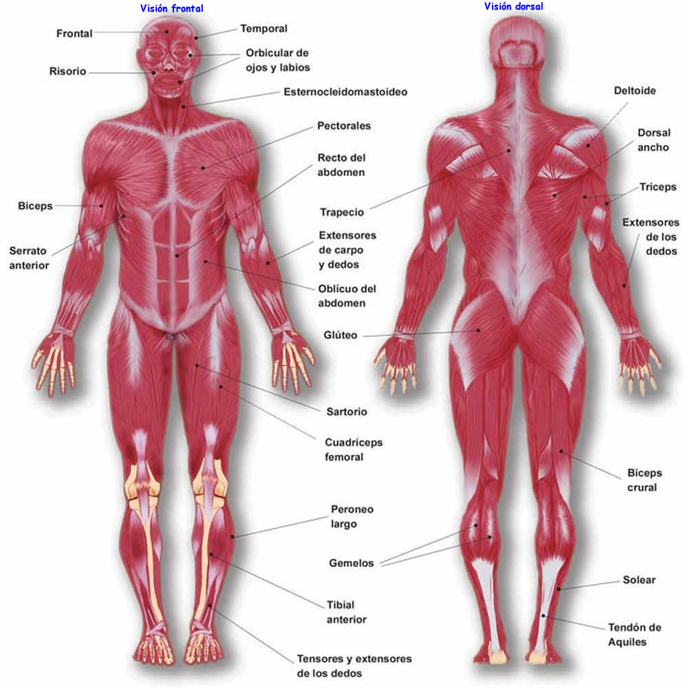
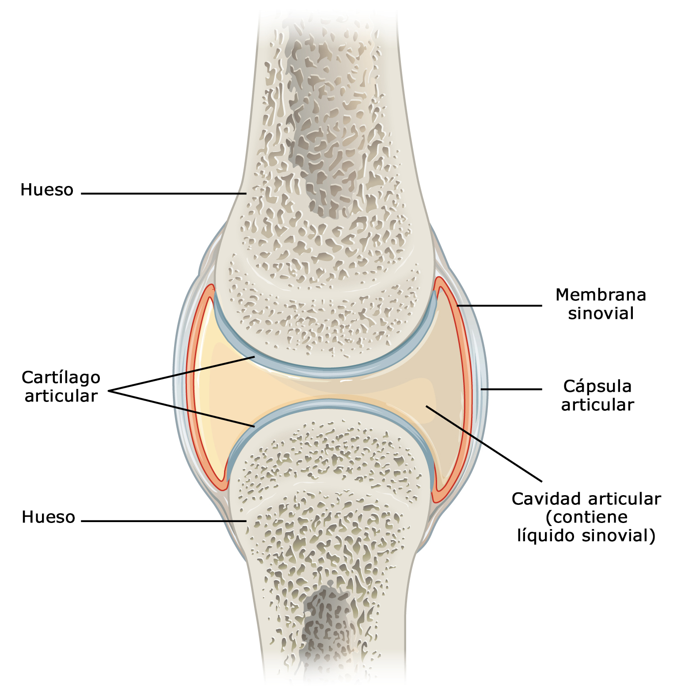

1. Osteología: El Sistema Óseo
El esqueleto humano adulto consta de 206 huesos. No son estructuras inertes; son órganos vivos, vascularizados y en constante renovación.
Microestructura Ósea:
Más que "Piedra"
El hueso no es una masa sólida uniforme. Si lo miramos al microscopio, encontramos dos tipos de arquitectura:
Hueso Compacto (Cortical):
Forma la capa exterior dura. Su unidad funcional es la Osteona (o Sistema de Havers), una serie de anillos concéntricos que rodean canales por donde pasan vasos sanguíneos y nervios.
Hueso Esponjoso (Trabecular):
Se encuentra en los extremos de los huesos largos y en el interior de los planos. Tiene forma de panal (trabéculas), lo que permite que el hueso sea ligero pero extremadamente resistente a las fuerzas de compresión.
El Ciclo de Remodelación (Osteoblastos vs. Osteoclastos)
Tus huesos se reconstruyen por completo aproximadamente cada 10 años. Este equilibrio depende de tres células:
Osteoblastos:
Son los "constructores"; secretan la matriz mineral para formar hueso nuevo.
Osteoclastos:
Son los "demoledores"; reabsorben el hueso viejo o dañado para liberar calcio al torrente sanguíneo.
Osteocitos:
Son células maduras que actúan como sensores para detectar estrés físico y coordinar a los otros dos grupos.
Funciones del Hueso
- Sostén: Armazón del cuerpo.
- Protección: Resguarda órganos vitales (cráneo y caja torácica).
- Hematopoyesis: Producción de células sanguíneas en la médula ósea.
- Reserva: Almacena calcio y fósforo.
Tipos de Huesos
- Largos: Fémur, húmero.
- Cortos: Huesos del carpo (muñeca).
- Planos: Escápula, huesos del cráneo.
- Irregulares: Vértebras.

2. Miología: El Sistema Muscular
Los músculos son los motores del cuerpo. Representan aproximadamente el 40-50% del peso corporal total.
Fisiología Muscular:
El Sarcómero
Para entender cómo te mueves, hay que bajar al nivel molecular. La unidad funcional del músculo es el sarcómero.
Dentro del sarcómero, dos proteínas principales interactúan: la Actina (filamentos delgados) y la Miosina (filamentos gruesos).
La Teoría del Deslizamiento:
Cuando el sistema nervioso envía una señal eléctrica, se libera calcio. Esto permite que las "cabezas" de miosina enganchen a la actina y tiren de ella, acortando el músculo. Este proceso consume grandes cantidades de ATP (energía química).Biomecánica:
Las Palancas del Cuerpo
El sistema locomotor funciona mediante leyes de física. Los huesos actúan como palancas, las articulaciones como puntos de apoyo (fulcros) y los músculos como la fuerza:
Palanca de 1er Género (Equilibrio):
Como el apoyo de la cabeza sobre la columna (el atlas).
Palanca de 2do Género (Fuerza):
Como cuando te pones de puntillas (el pie actúa como palanca para levantar todo el peso corporal).
Palanca de 3er Género (Velocidad/Rango):
La más común en el cuerpo, como el bíceps doblando el codo. Permite movimientos amplios y rápidos.
Dato Clave: Un músculo esquelético solo puede tirar (contraerse), nunca empujar. Por eso trabajan en parejas antagonistas (ej: cuando el bíceps se contrae, el tríceps se relaja).
Propiedades de los Músculos
| Propiedad |
Descripción |
| Excitabilidad |
Capacidad de recibir y responder a estímulos nerviosos. |
| Contractilidad |
Capacidad de acortarse con fuerza. |
| Extensibilidad |
Capacidad de estirarse sin dañarse. |
| Elasticidad |
Capacidad de recuperar su forma original. |

3. El Punto de Unión: Articulaciones
Es donde dos o más huesos se encuentran. Se clasifican principalmente por su movilidad:
El Papel del Cartílago y el Líquido Sinovial
En las articulaciones móviles (diartrosis), el hueso no toca al hueso.
Cartílago Hialino:
Una capa lisa que reduce la fricción y absorbe impactos.
Líquido Sinovial:
Un lubricante natural similar a la clara de huevo que nutre al cartílago y permite un movimiento casi sin fricción.
- Sinartrosis: Inmóviles (suturas del cráneo).
- Anfiartrosis: Movimiento limitado (discos intervertebrales).
- Diartrosis (Sinoviales): Gran movilidad (hombro, rodilla).

Regresar al temario principal